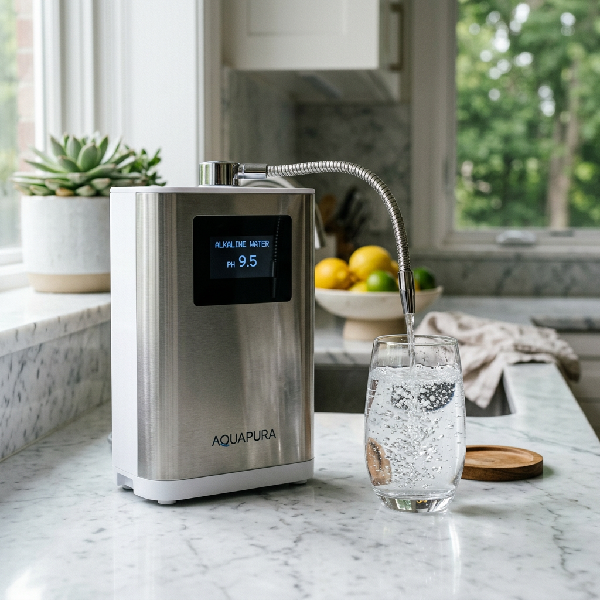
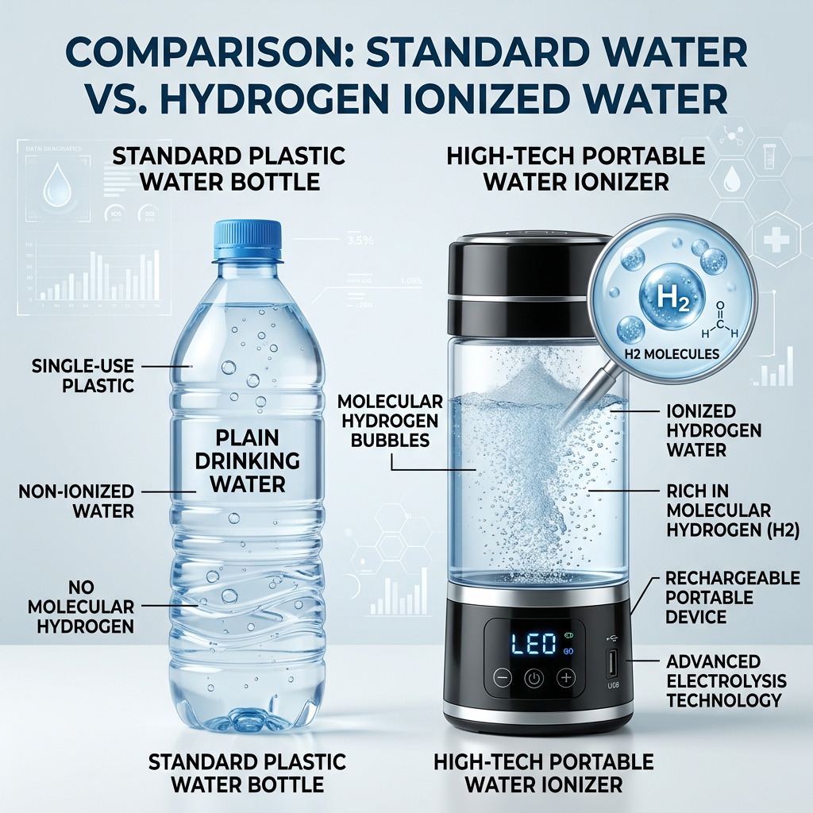

Best Portable Water Ionizer Machine: Your Ultimate Guide to On-the-Go Alkaline Water
Why You Need a Portable Water Ionizer Machine Today
In a world where health is our greatest wealth, the quality of the water we drink has never been more critical. Traditional tap water often contains contaminants and lacks the restorative properties of ionized water. This is where a portable water ionizer machine becomes an essential companion for the health-conscious individual. By utilizing advanced electrolysis technology, a portable water ionizer machine restructures your water, increasing its pH and infusing it with beneficial molecular hydrogen.
Whether you are a busy professional, a frequent traveler, or an athlete looking for better recovery, owning a portable water ionizer machine ensures that you never have to settle for subpar hydration. The convenience of having a portable water ionizer machine in your bag means you can transform any bottled or filtered water into a powerful antioxidant elixir in minutes.

How a Portable Water Ionizer Machine Transforms Your Hydration
The primary function of a portable water ionizer machine is to produce alkaline and hydrogen-rich water. But why does this matter? Standard water often has a neutral or acidic pH. A portable water ionizer machine uses SPE (Solid Polymer Electrolyte) and PEM (Proton Exchange Membrane) technology to separate the water molecules, resulting in high concentrations of H2. This makes the portable water ionizer machine a potent tool for fighting oxidative stress.
When you use a portable water ionizer machine, you are not just drinking water; you are consuming a liquid that helps neutralize free radicals in your body. The micro-clustering effect produced by a portable water ionizer machine also means the water is more easily absorbed by your cells, leading to superior hydration compared to regular water.
Click here to check priceComparison: Portable Water Ionizer Machine vs. Standard Filtration
Many people confuse a portable water ionizer machine with a simple filter. While filters remove impurities, only a portable water ionizer machine changes the chemical properties of the water to provide therapeutic benefits. Below is a comparison to help you understand why a portable water ionizer machine is the superior choice for your health.
| Feature | Portable Water Ionizer Machine | Standard Filter Pitcher |
|---|---|---|
| pH Customization | Alkaline (8.5 - 9.5+) | Neutral/No Change |
| Antioxidant Potential (ORP) | Negative (High) | Positive (Low) |
| Molecular Hydrogen | Yes | No |
| Portability | Extremely High | Low/Bulky |
| Technology | SPE/PEM Electrolysis | Activated Carbon |

Key Features to Look for in the Best Portable Water Ionizer Machine
Not every portable water ionizer machine is created equal. When shopping for the best portable water ionizer machine, you must look for specific technical certifications and build materials. A high-quality portable water ionizer machine should feature food-grade borosilicate glass or BPA-free Tritan materials to ensure no chemicals leach into your water.
Furthermore, the internal plates of your portable water ionizer machine should be made of titanium coated with platinum. This ensures the longevity of the portable water ionizer machine and prevents heavy metal contamination during the electrolysis process. Battery life is another crucial factor; a top-tier portable water ionizer machine should offer at least 15-20 cycles on a single USB charge, allowing you to use your portable water ionizer machine all day without worry.
Maximizing the Benefits of Your Portable Water Ionizer Machine
To get the most out of your portable water ionizer machine, it is recommended to drink the water immediately after the ionization cycle. The molecular hydrogen produced by the portable water ionizer machine is a gas and will eventually dissipate. By drinking directly from your portable water ionizer machine, you ensure that you are receiving the maximum concentration of antioxidants possible.
Regular maintenance is also key to keeping your portable water ionizer machine performing at its peak. Most users of a portable water ionizer machine find that a simple citric acid rinse once a month keeps the electrolysis plates clean and efficient. This ensures your portable water ionizer machine continues to deliver high-quality alkaline water for years to come.
Conclusion: Is a Portable Water Ionizer Machine Worth the Investment?
If you are serious about your health, investing in a portable water ionizer machine is one of the smartest decisions you can make. The ability to carry a portable water ionizer machine with you ensures that no matter where you are—at the gym, in the office, or on an airplane—you have access to the highest quality hydration available. The portable water ionizer machine bridges the gap between convenience and wellness.
Don't wait to upgrade your lifestyle. A portable water ionizer machine is more than just a gadget; it is a long-term investment in your vitality and longevity. Experience the difference of hydrogen-rich water today with your own portable water ionizer machine.
Click here to check price